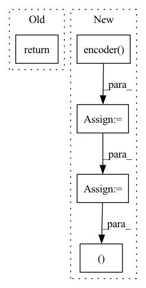

Pattern ID :2899
Before Change
if self.args.normalize:
z = nn.functional.normalize(z, dim=1)
return h, z
After Change
def forward(self, x_i, x_j):
h_i = self.encoder(x_i)
h_j = self.encoder( x_j)
z_i = self.projector(h_i)
z_j = self.projector(h_j)
if self.args.normalize:
z_i = nn.functional.normalize(z_i, dim=1)
z_j = nn.functional.normalize(z_j, dim=1)
return h_i, h_j, z_i, z_j
In pattern: SUPERPATTERN
Frequency: 3
Non-data size: 5
Instances Fragment ID: 9560145
Project Name: spijkervet/simclr
Commit Name: 212fdff7e52da4cac9eaafa1df97a12e59ae7603
Time: 2020-07-10
Author: janne.spijkervet@gmail.com
File Name: modules/simclr.py
M Class Name: SimCLR
N Class Name: SimCLR
M Method Name: forward(3)
N Method Name: forward(2)
M Parent Class: nn.Module
N Parent Class: nn.Module
M File Name: modules/simclr.py
N File Name: modules/simclr.py
M Start Line: 47
M End Line: 52
N Start Line: 45
N End Line: 56
Before Change
super().__init__()
def forward(self, x):
return x
After Change
if mems.ndim == 2:
mems = repeat(mems, "n d -> b n d", b = b)
enc = self.encoder( src, context = mems)
out = self.decoder(tgt, context = enc)
mems = self.mem_updater(mems, enc)
return out, mems
Fragment ID: 9560128
Project Name: lucidrains/memformer
Commit Name: f8648dffb97894391d67166550584ddb60f7e413
Time: 2020-10-28
Author: lucidrains@gmail.com
File Name: memformer/memformer.py
M Class Name: Memformer
N Class Name: Memformer
M Method Name: forward(4)
N Method Name: forward(2)
M Parent Class: nn.Module
N Parent Class: nn.Module
M File Name: memformer/memformer.py
N File Name: memformer/memformer.py
M Start Line: 10
M End Line: 11
N Start Line: 150
N End Line: 161
Before Change
super().__init__()
def forward(self, x):
return x
// relative positional bias
After Change
orig_x = x.clone()
x = self.encoder( x)
x = rearrange(x, "b c n -> b n c")
x, indices, commit_loss = self.rq(x)
x = rearrange(x, "b n c -> b c n")
recon_x = self.decoder(x) Fragment ID: 9560147
Project Name: lucidrains/audiolm-pytorch
Commit Name: 3bdca3666a6b5b9d018c80d1111698feb112f078
Time: 2022-10-25
Author: lucidrains@gmail.com
File Name: audiolm_pytorch/audiolm_pytorch.py
M Class Name: SoundStream
N Class Name: SoundStream
M Method Name: forward(2)
N Method Name: forward(2)
M Parent Class: nn.Module
N Parent Class: nn.Module
M File Name: audiolm_pytorch/audiolm_pytorch.py
N File Name: audiolm_pytorch/audiolm_pytorch.py
M Start Line: 22
M End Line: 22
N Start Line: 124
N End Line: 138